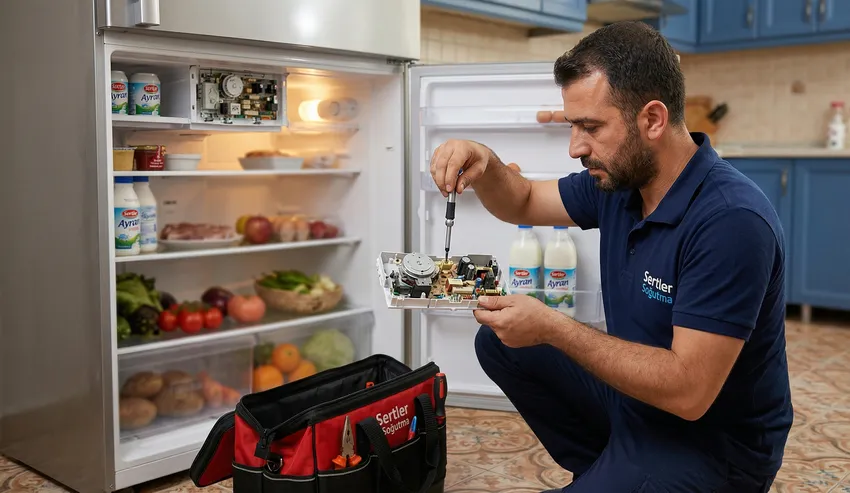

Hotpoint markası, İtalyan mühendislik vizyonu ve yenilikçi ev teknolojileri ile dünya genelinde milyonlarca konutun ilk tercihleri arasında yer alır. Şık tasarımları, gelişmiş hijyen programları, yüksek enerji tasarrufu sunan motor yapıları ve akıllı sensör teknolojileri ile Hotpoint ürünleri günlük hayatımızı büyük ölçüde kolaylaştırır.
Ancak sürekli çalışan elektrikli ve mekanik ev aletlerinde zaman içerisinde yıpranmalar, voltaj dalgalanmalarına bağlı kilitlenmeler, kireçlenme sorunları veya parça ömrünün tükenmesi gibi teknik arızalar meydana gelebilir. Böyle anlarda cihazlarınıza yetkisiz kişilerin müdahale etmesi, çok daha büyük ve geriye dönülemez hasarlara yol açabilir.
Bölgede uzun yıllardır kalitenin ve güvenin adresi olan Sertler Soğutma, arızalanan veya periyodik bakıma ihtiyaç duyan Hotpoint ürünleriniz için anında ve kesintisiz çözümler sunar. Tarsus Hotpoint Servisi alanındaki derin tecrübemiz ve donanımlı teknisyen kadromuzla, cihazlarınızı fabrikadan çıktığı ilk günkü verimliliğe kavuşturmak temel amacımızdır.
Ev ortamında gıdalarınızı taze tutan buzdolabının soğutmaması veya kirli çamaşırların biriktiği bir anda çamaşır makinesinin durması yaşam kalitenizi olumsuz etkiler. Bulaşık makinesinin su boşaltmaması ya da kurutma makinesinin ısıtma yapmaması gibi durumlar da acil teknik müdahale gerektirir.
İşte tam bu aşamada Sertler Soğutma, gelişmiş araç filosu ve uzman kadrosu ile devreye girmektedir. Tarsus Hotpoint Servisi taleplerinize aynı gün içerisinde dönüş sağlayarak adresinize ulaşıyor ve yaşadığınız aksaklığı adresinizde hızlıca çözüyoruz.
Hotpoint cihazlarının bünyesinde yer alan Inverter motorlar, Active Oxygen tazelik sistemleri ve özel elektronik kontrol kartları hassas bir teknik altyapı gerektirir. Sıradan tamir metodları bu gelişmiş teknolojilerde yetersiz kalabileceği gibi cihazın genel çalışma dengesini de bozabilir.
Sertler Soğutma teknisyenlerimiz, Hotpoint ev aletlerinin tüm modelleri ve teknik şemaları üzerinde uzmanlaşmış eğitimli personellerden oluşur. Tarsus Hotpoint Servisi hizmetlerimizde modern arıza tespit cihazlarını kullanarak sorunun kaynağını noktasal olarak saptıyor ve kalıcı çözümler üretiyoruz.
Şeffaf hizmet ilkesi gereği, işlem öncesinde cihazın mevcut durumu ve yapılması gereken tüm teknik uygulamalar hakkında müşterilerimizi açık bir dille bilgilendiriyoruz. Onayınız alınmadan hiçbir onarım veya parça değişimi adımı kesinlikle başlatılmaz.
Tarsus genelinde sunduğumuz yüksek standartlı servis anlayışımız, firmamızı sektörde en çok tavsiye edilen isim haline getirmiştir. Tarsus Hotpoint Servisi arayışlarınızda Sertler Soğutma güvencesini tercih ederek cihazlarınızı emniyetle teslim edebilirsiniz.
Cihazlarınızın performansını artırmak, enerji verimliliğini korumak ve ömrünü maksimum seviyeye çıkarmak için 7/24 hizmetinizdeyiz. Sertler Soğutma kalitesiyle Hotpoint teknolojisi evlerinizde daima maksimum verimle çalışmaya devam eder.
Teknik altyapımız, orijinal yedek parça stoğumuz ve uzman kadromuzla Tarsus'un her mahallesinde hizmet vermekteyiz. Tarsus Hotpoint Servisi ayrıcalığını yaşamak için iletişim kanallarımız üzerinden bize dilediğiniz an ulaşabilirsiniz.
Tarsus Hotpoint Servisi Uzman Tamir Hizmeti
Hotpoint beyaz eşyalarının ve ev teknolojilerinin tamir süreci, cihazın çalışma mantığını iyi bilen eğitimli teknisyenler tarafından yürütülmelidir. Tarsus Hotpoint Servisi kulvarında yılların deneyimine sahip olan Sertler Soğutma, markanın sunduğu tüm teknolojilere tam anlamıyla hakimdir.
Uzman tamir hizmetimiz, arızalı parçanın sökülüp yenisiyle değiştirilmesinden çok daha kapsamlı bir süreci içerir. Sertler Soğutma teknisyenleri, cihazın genel çalışma parametrelerini analiz ederek arızayı ortaya çıkaran yan etkenleri de ortadan kaldırır.
Hotpoint buzdolaplarında meydana gelen dondurmama, alt kısma su sızdırma, karlanma yapma veya aşırı gürültülü çalışma sorunları uzman kadromuzca hızla giderilir. Tarsus Hotpoint Servisi ekibimiz No-Frost gaz dolaşım hatlarından sensör değerlerine kadar her ayrıntıyı inceler.
Çamaşır ve bulaşık makinelerinde karşılaşılan sıkma yapmama, programı yarıda kesme, su almama veya su boşaltmama gibi aksaklıklar da kalıcı yöntemlerle onarılır. Sertler Soğutma, deneysel veya geçici tamir uygulamalarına asla izin vermez.
Tamir işlemlerimiz esnasında cihazın orijinal yapısının muhafaza edilmesine azami özen gösterilmektedir. Tarsus Hotpoint Servisi müdahalelerimiz sayesinde cihazınız fabrikasyon standartlarını korumaya devam eder.
Gelişmiş el aletleri, dijital multimetreler ve özel test aparatları ile gerçekleştirdiğimiz tamir süreçleri kısa sürede tamamlanır. Sertler Soğutma, evinizde zaman kaybı yaşamanızın önüne geçer.
Bölgede güvenilir ve nitelikli tamir hizmeti sunan firmamız, müşteri memnuniyetini her zaman en üst seviyede tutmaktadır. Tarsus Hotpoint Servisi ihtiyaçlarınızda uzman bir teknik kadro ile çalışmanın konforunu yaşayabilirsiniz.
Cihazınızın modeli ne kadar eski ya da yeni olursa olsun Sertler Soğutma altyapısı her türlü arızayı çözecek kapasitededir. Uzman tamir desteği almak için çağrı merkezimizi aramanız yeterlidir.
Sertler Soğutma Hotpoint Arıza Tespit ve Onarımı
Doğru yapılmış bir arıza tespiti, başarılı bir onarım sürecinin en kritik aşamasıdır. Arızanın kaynağı yanlış belirlendiğinde yapılan müdahaleler sorunu çözmediği gibi gereksiz maliyetlerin doğmasına da sebep olur. Sertler Soğutma, Hotpoint arıza tespit ve onarımında en son teknolojik imkanları kullanır. Gelişmiş hijyen programlarına sahip ev aletleriniz için ise garantili Adapazarı Hotpoint servisi hizmetlerini tercih edebilirsiniz.
Hotpoint cihazlar, bünyelerinde bulunan gelişmiş mikroişlemciler vasıtasıyla herhangi bir aksaklık anında dijital ekranlarında arıza kodları gösterir. Tarsus Hotpoint Servisi ekiplerimiz bu kodların arkasındaki gerçek teknik sebebi bulmak için derinlemesine analiz yapar:
- Hotpoint Çamaşır Makinesi F01 Hata Kodu: Motor triyak kısa devresi veya kart arızası.
- Hotpoint Çamaşır Makinesi F05 Hata Kodu: Tahliye pompası tıkalı veya basınç anahtarı arızası.
- Hotpoint Bulaşık Makinesi F01 Hata Kodu: Su sızıntısı emniyet sistemi aktifleşmiş.
- Hotpoint Bulaşık Makinesi F03 Hata Kodu: Su tahliye süresi aşıldı veya ısıtıcı rezistans arızalı.
- Hotpoint Buzdolabı F02 Hata Kodu: Dondurucu evaporatör sensör arızası.
Sertler Soğutma teknisyenleri sadece ekrandaki koda bağlı kalmaz; voltaj çekimlerini, su basınçlarını ve mekanik sürtünmeleri de dijital cihazlarla ölçer. Tarsus Hotpoint Servisi ekibimiz arızanın kökenini bulmadan onarım işlemine geçmez.
Arıza kaynağı netleştirildikten sonra müşteriye detaylı bir onarım planı ve şeffaf maliyet özeti sunulur. Müşterimizin onayı alındıktan sonra onarım adımları titizlikle uygulanmaya başlanır.
Yerinde onarım imkanlarımız sayesinde cihazlarınızın nakliye esnasında zarar görme riski tamamen ortadan kaldırılır. Sertler Soğutma, arıza tespitinden teslimat aşamasına kadar her noktada yüksek kalite standartları sunar.
Cihazınız hata kodu veriyor, anormal sesler çıkarıyor veya hiç çalışmıyorsa Tarsus Hotpoint Servisi uzmanlığımıza başvurabilirsiniz. Sertler Soğutma sorunlarınızı ilk seferde doğru tespit eder ve kalıcı olarak çözer.
Tarsus Hotpoint Servisi Yıllık Bakım Paketleri
Hotpoint Cihazınız İçin Hemen Randevu Alın
Orijinal yedek parça ve 1 yıl servis garantisiyle Tarsus genelinde aynı gün adresinizdeyiz.
Beyaz eşyalar ve iklimlendirme cihazları, performanslarını koruyabilmek için düzenli periyodik bakıma ihtiyaç duyan karmaşık sistemlerdir. Yılda en az bir kez yapılan profesyonel bakımlar, cihazların beklenmedik anlarda arızalanmasını önler. Sertler Soğutma, Hotpoint ürünlerine özel yıllık bakım paketleri sunmaktadır.
Bakımsız kalan cihazlarda zamanla kireçlenme, tozlanma, sürtünme artışı ve bakteri birikimi meydana gelir. Bu durum cihazın çalışma performansını düşürürken elektrik ve su tüketiminin de ciddi oranda artmasına yol açar. Tarsus Hotpoint Servisi bakım paketlerimiz cihazınızı bu risklerden korur.
Yıllık bakım paketlerimiz kapsamında uygulanan temel işlemler şunlardır:
- Buzdolabı Bakımı: Arka kondanser temizliği, defrost su kanalı açılması, kapı fitili sızdırmazlık testi ve gaz basınç ölçümü.
- Çamaşır Makinesi Bakımı: Deterjan kutusu temizliği, kazan kireç arındırma, tahliye pompası hijyeni ve amortisör kontrolü.
- Bulaşık Makinesi Bakımı: Fıskiye delikleri kireç temizliği, ana süzgeç filtre hijyeni ve su yumuşatıcı ayarları.
- Kurutma Makinesi Bakımı: Isı pompası filtre derin temizliği, nem sensör kalibrasyonu ve hav birikintisi tahliyesi.
Sertler Soğutma tarafından yürütülen bu bakımlar sayesinde Hotpoint cihazlarınızın motoru ve kartı aşırı yük altında çalışmaktan kurtulur. Tarsus Hotpoint Servisi yıllık bakım paketleri cihazınızın kullanım ömrünü belirgin şekilde uzatır.
Bakımı yapılan cihazlar daha az enerji harcayarak yüksek verim sunar ve böylece ev bütçenize doğrudan katkı sağlar. Sertler Soğutma ile cihazlarınızı koruma altına alabilirsiniz.
Eşyalarınızın arızalanmasını beklemeden koruyucu bakım yaptırmak en akılcı çözümdür. Tarsus Hotpoint Servisi yıllık bakım paketlerimizden yararlanmak için randevunuzu hemen bugün oluşturabilirsiniz.
Sertler Soğutma İle Hotpoint Cihaz Garantisi
Teknik servis hizmetlerinde müşterilerin kendilerini güvende hissetmelerini sağlayan en temel unsur, verilen hizmetin arkasında durulması ve garanti sunulmasıdır. Sertler Soğutma, Tarsus Hotpoint Servisi bünyesinde gerçekleştirdiği tüm onarım, bakım ve parça değişimi işlemlerini resmi garanti belgesi ile güvence altına almaktadır. Bütçe dostu pratik ev teknolojilerinizde oluşabilecek aksaklıklarda deneyimli bir Adapazarı İndesit servisi firmasından yardım alabilirsiniz.
Firmamız tarafından değiştirilen tüm Hotpoint orijinal yedek parçaları ve uygulanan işçilikler montaj tarihinden itibaren 1 yıl süreyle Sertler Soğutma garantisi altındadır. Onarım tamamlandığında teknisyenimiz tarafından müşterimize yapılan müdahaleleri ve garanti süresini belirten resmi servis formu teslim edilir.
Garanti süresi olan 1 yıl içerisinde, değiştirilen parçada herhangi bir üretim hatası veya yeniden arızalanma durumu yaşanırsa, Tarsus Hotpoint Servisi ekibimiz adrese gelerek durumu kontrol eder. Arızalı parça hiçbir ek ücret talep edilmeden ücretsiz olarak yenisiyle değiştirilir.
- Sertler Soğutma cihaz garantisinin sağladığı temel avantajlar şunlardır:
- Yapılan harcamanın karşılıksız kalmaması ve bütçenizin koruma altına alınması.
- Kullanılan tüm yedek parçaların Hotpoint standartlarında orijinal ürünler olması.
- Tüm servis geçmişinizin sistemimizde dijital olarak kayıt altında tutulması.
- Garanti içi arıza bildirimlerine öncelikli mobil servis yönlendirilmesi.
Dürüst ve ilkeli servis anlayışımız gereği, müşterilerimizin mağdur olmasına asla izin vermeyiz. Sertler Soğutma sunduğu garanti güvencesi ile Tarsus halkının en güvendiği firma olmayı başarmıştır.
Hotpoint ev aletlerinizi uzun yıllar sorunsuz ve güvende kullanmak istiyorsanız tercihinizi bizden yana yapabilirsiniz. Tarsus Hotpoint Servisi garanti ayrıcalığı ile cihazlarınız emin ellerdedir.
Tarsus Hotpoint Servisi Hızlı Mobil Teknik Destek
Gelişen şehir hayatında zaman en kıymetli değerlerden biridir. Arızalanan devasa beyaz eşyaların günlerce tamircide beklemesi veya nakliye esnasında zarar görmesi tüketiciler için büyük bir sorundur. Sertler Soğutma, bu zorlukları ortadan kaldırmak adına Tarsus'un tüm mahallelerine yayılan hızlı mobil teknik destek ağını kurmuştur.
Mobil servis araçlarımız tam teşekküllü birer teknik atölye donanımına sahiptir. İçlerinde Hotpoint ürün grubuna ait en çok ihtiyaç duyulan orijinal yedek parçalar, dijital ölçüm aletleri ve montaj teçhizatları yer alır. Tarsus Hotpoint Servisi mobil ekiplerimiz arızaların büyük çoğunluğunu yerinde çözer.
Çağrı merkezimize ulaşan bildirimler doğrultusunda konumunuza en yakın mobil araç navigasyon altyapısı üzerinden adresinize yönlendirilir. Sertler Soğutma, verilen randevu saatlerine tam riayet ederek zaman kaybı yaşatmaz.
Hızlı mobil teknik destek hizmetimizin sağladığı avantajlar şunlardır:
- Cihazların nakliye esnasında çizilme veya darbe alma riski tamamen engellenir.
- Arızalar aynı gün içerisinde evinizde çözüme kavuşturulur.
- Onarım süreci tamamen müşterinin gözü önünde şeffaf bir şekilde gerçekleşir.
- Taşıma ve nakliye maliyetleri oluşmadığı için daha ekonomik hizmet sunulur.
Sertler Soğutma mobil teknisyenleri, güler yüzlü ve saygılı hizmet anlayışıyla hareket eder. Evinize konuk olan ekiplerimiz hijyen kurallarına uyarak galoş kullanır.
Özellikle buzdolabı arızaları gibi acil durumlarda mobil ekiplerimize öncelikli yönlendirme yapılır. Tarsus Hotpoint Servisi mobil ağımız ile gıdalarınız bozulmadan sorun giderilir.
Tarsus'un neresinde olursanız olun hızlı ve pratik teknik servis desteği almak için bize ulaşabilirsiniz. Sertler Soğutma mobil ekipleri çağrınızla birlikte derhal harekete geçer.
Sertler Soğutma Hotpoint Soğutucu ve Çamaşır Makinesi Tamiri
Buzdolapları ve çamaşır makineleri, evlerimizin en temel ve yokluğu en hızlı hissedilen iki ana beyaz eşya grubudur. Sertler Soğutma, Hotpoint markalı soğutucu ve çamaşır makinelerinin tamirinde Tarsus'un en uzman kadrosuna sahiptir. Tarsus Hotpoint Servisi kapsamında bu cihazlara özel onarım metodları uyguluyoruz.
Hotpoint buzdolaplarında sıkça karşılaşılan gaz kaçakları, kompresör kilitlenmeleri, fan motoru arızaları ve defrost ısıtıcı yanmaları Sertler Soğutma güvencesiyle onarılır. Soğutucu gaz dolaşım hatları vakumlanarak orijinal gramajında gaz şarjı gerçekleştirilir.
Hotpoint çamaşır makineleri ise Inverter motor yapıları ve hassas tambur mimarileri ile öne çıkar. Çamaşır makinelerinde sıklıkla görülen ve profesyonel tamir gerektiren durumlar şunlardır:
- Kazan bilyalarının (rulmanların) dağılmasına bağlı yüksek gürültü ve sarsıntı.
- Amortisörlerin yıpranması sonucu sıkma esnasında makinenin yürümesi.
- Tahliye pompasının tıkanması veya bozulması nedeniyle su boşaltmama.
- Kapak emniyet kilidinin arızalanması sonucu programın başlamaması.
- Rezistans kireçlenmesine bağlı olarak suyun ısınmaması.
Sertler Soğutma teknisyenleri, bu arızaların tamamını adreste orijinal yedek parçalar kullanarak tamir eder. Tarsus Hotpoint Servisi kalitemiz ile çamaşır makineniz ve buzdolabınız ilk günkü performansına döner.
Cihazlarınızda oluşan mekanik ve elektronik problemleri ertelemeden profesyonel yardıma başvurmanız şarttır. Küçük arızaların zamanında giderilmesi daha büyük masrafların önüne geçer.
Buzdolabı ve çamaşır makinenizin güvenle tamir edilmesini istiyorsanız Sertler Soğutma çağrı merkezini arayabilirsiniz. Tarsus Hotpoint Servisi ekiplerimiz cihazlarınızı hızlıca sağlığına kavuşturur.
Güvenilir Tarsus Hotpoint Servisi Hizmetleri
Teknik servis sektöründe güven kazanmak ve bu güveni yıllar boyunca sürdürebilmek yüksek standartlarda hizmet sunmayı gerektirir. Sertler Soğutma, dürüstlük, şeffaflık ve müşteri memnuniyeti ilkeleri üzerine inşa ettiği hizmet anlayışı ile Tarsus'un en güvenilir servisi haline gelmiştir. İklimlendirme ve beyaz eşya alanında Hatay bölgesinde kaliteli bir AEG servisi arayışında olan kullanıcılar gibi, Tarsus genelinde de Sertler Soğutma olarak kesintisiz çözümler sunmaktayız.
Güvenilir hizmet anlayışımızın temelinde müşterilerimize verdiğimiz sözleri eksiksiz tutmak yatar. Randevu saatlerine zamanında uymak, tamir süreçlerini açıkça izah etmek ve sadece gerekli işlemleri yapmak kurumsal ilkelerimizdir. Tarsus Hotpoint Servisi süreçlerinde belirsizliklere yer verilmez.
Firmamızda arızasız parçaların değiştirilmesi veya haksız kazanç sağlama amacıyla gereksiz masraf çıkarılması gibi durumlara kesinlikle izin verilmez. Sertler Soğutma, dürüst servis ilkesinden asla taviz vermemektedir.
Güvenilir servis sürecimizin temel boyutları şunlardır:
- Onarım öncesinde tüm maliyet kalemlerinin müşteriye net olarak beyan edilmesi.
- Değiştirilen arızalı parçaların müşteriye gösterilmesi ve durumunun izahı.
- Yapılan tüm işlemlerin resmi servis formu ve garanti belgesi ile belgelenmesi.
- Servis sonrası süreçte de müşterilerin sorularına kesintisiz yanıt verilmesi.
Sertler Soğutma teknisyenleri, evinizin hijyenine saygı göstererek galoş kullanır ve çalışma alanını temiz bir şekilde teslim eder. Müşteri konforu her aşamada ön planda tutulur.
Yıllardır bizi tercih eden ve yakınlarına tavsiye eden mutlu müşteri portföyümüz, dürüstlüğümüzün en büyük kanıtıdır. Tarsus Hotpoint Servisi ihtiyaçlarınızda güvenle firmamıza başvurabilirsiniz.
Ev teknolojilerinizi riske atmadan, kurumsal ve dürüst bir adresten hizmet almak istiyorsanız Sertler Soğutma her zaman yanınızdadır. Bize iletişim kanallarımızdan dilediğiniz an ulaşabilirsiniz.
Sertler Soğutma Hotpoint Kart me Motor Değişimi
Beyaz eşyaların en pahalı ve kritik iki bileşeni elektronik ana kartları ve motor üniteleridir. Ana kart cihazın beyni işlevini görürken, motor ise mekanik hareketin sağlandığı kalptir. Bu iki aksamda meydana gelen arızalar cihazın tamamen durmasına yol açar.
Sertler Soğutma, Hotpoint kart ve motor değişimi hususunda Tarsus'taki en donanımlı teknisyen kadrosuna sahiptir. Tarsus Hotpoint Servisi kapsamında bu hassas bileşenlerin tamir ve değişim işlemleri yüksek başarı oranıyla gerçekleştirilir.
Şebekedeki ani voltaj yükselmeleri veya nem nedeniyle Hotpoint kartlarında yanmalar yaşanabilir. Sertler Soğutma elektronik laboratuvarında arızalı kartlar öncelikle tamir edilmeye çalışılır. Kart üzerindeki yanmış röleler ve triyaklar değiştirilerek bütçeniz korunur.
Kartın tamir edilemeyecek kadar ağır hasar gördüğü durumlarda ise Hotpoint orijinal sıfır kart montajı yapılır. Yeni kart cihazın modeline uygun yazılımla güncellenir.
Motor arızalarında ise sargı yanmaları, kilitlenmeler veya inverter sürücü hataları giderilir. Tarsus Hotpoint Servisi ekiplerimiz orijinal Hotpoint motor montajı gerçekleştirerek cihazınıza yeni bir çalışma ömrü kazandırır.
Kart ve motor değişimi yapılan cihazlar firmamızın 1 yıllık resmi garantisi altına alınır. Sertler Soğutma, yapılan hassas değişimlerle cihazın fabrika verimliliğinde çalışmasını sağlar.
Cihazınızın ekranı gelmiyorsa, komut almıyorsa veya motor dönmüyorsa Tarsus Hotpoint Servisi çağrı merkezimizi arayarak kart ve motor desteği alabilirsiniz. Sertler Soğutma kesin çözümler sunar.
Tarsus Hotpoint Servisi Randevu Hattı
Hotpoint ev aletlerinizde aniden beliren bir arıza durumunda, mağduriyetinizin hızla giderilmesi için servis randevusu alma süreci pratik ve kesintisiz olmalıdır. Zamanınızın kıymetli olduğunun bilincinde olan Sertler Soğutma, müşterilerine bürokratik engellerle uğraşmadan tek bir telefonla hızlıca servis kaydı oluşturma imkanı sunmaktadır. Tarsus Hotpoint Servisi randevu hattımız, haftanın 7 günü günün 24 saati aktif olarak hizmet vermektedir. Evinizdeki farklı marka soğutucular veya şehir dışındaki evleriniz için kaliteli bir Adapazarı Altus servisi gereksiniminde uzman ekiplerden destek alabilirsiniz.
Randevu hattımızı aradığınızda sizi karşılayan uzman müşteri temsilcilerimiz, öncelikle cihazınızın türü, modeli ve gösterdiği arıza belirtileri hakkında sizden kısa bilgiler talep eder. Eğer karşılaşılan aksaklık basit bir kullanıcı ayarından veya kapalı unutulmuş bir vanadan kaynaklanıyorsa, temsilcimiz telefonda sizi yönlendirerek sorunun anında çözülmesini sağlar. Bu yönlendirme sayesinde boş yere servis bekleme durumunda kalmazsınız.
Telefonda çözülemeyen teknik problemlerde ise adres bilginiz kayda alınarak konumunuza en yakın mobil Tarsus Hotpoint Servisi ekibimiz sevk edilir. Seçtiğiniz gün ve saat dilimi kesin olarak sisteme işlenir. Sertler Soğutma, verilen randevu saatlerine sadık kalma konusunda bölgenin en disiplinli firmalarından biridir. Müşterilerimizin saatlerce evde servis beklemesinin önüne geçiyoruz.
Randevu hattımızın yanı sıra dijital kanallarımız üzerinden de kolayca kayıt oluşturabilirsiniz:
- Web sitemizde bulunan online canlı destek ve hızlı başvuru formları üzerinden servis talebi bırakabilirsiniz.
- WhatsApp destek hattımız üzerinden arızalı cihazınızın fotoğrafını veya hata kodunun videosunu ileterek ön teşhis yapılmasını sağlayabilirsiniz.
- Sosyal medya hesaplarımız üzerinden çağrı merkezimize ulaşarak randevu saatlerinizi belirleyebilirsiniz.
Çalışan müşterilerimiz için mesai saatleri sonrasına veya hafta sonu günlerine özel randevu zamanları da sunulmaktadır. Randevu saatinizde bir değişiklik yapmanız gerektiğinde randevu hattımızı arayarak kaydınızı kolayca güncelleyebilirsiniz. Sertler Soğutma müşteri odaklı iletişim ağıyla her zaman yanınızdadır.
Acil teknik servis ihtiyaçlarınızda randevu hattımız anında aksiyon alır. Özellikle gıdaların bozulma riski bulunan buzdolabı arızalarında kaydınız "öncelikli çağrı" statüsüne alınır. Tarsus Hotpoint Servisi randevu hattımızı telefonunuza kaydederek ihtiyaç duyduğunuz her an tek tıkla profesyonel desteğe ulaşabilirsiniz.
Sertler Soğutma Hotpoint Su Sızıntı Çözümleri
Çamaşır makineleri, bulaşık makineleri ve bazı buzdolabı modellerinde meydana gelen su sızıntıları, evlerde parkelerin kabarmasına, mobillerin zarar görmesine ve alt komşunun tavanında su lekeleri oluşmasına sebep olabilen riskli arızalardır. Su ile elektriğin temas etme riski hayati tehlikeler de yaratabilir. Sertler Soğutma, Hotpoint cihazlarda görülen su sızıntısı problemlerinde uzman kadrosuyla kesin ve kalıcı çözümler üretmektedir.
Su kaçağının kaynağı cihazın türüne göre farklılık gösterir. Hotpoint çamaşır makinelerinde su sızıntısının en sık karşılaşılan nedeni yırtılan veya esneyen kazan körük lastikleridir. Sert sular ve deterjan artıkları zamanla körük lastiğini deforme eder. Sertler Soğutma teknisyenleri yırtık körük lastiklerini Hotpoint orijinal parçalarıyla değiştirerek sızıntıyı anında keser. Deterjan kutusu tıkanıklıkları ve tahliye borusu sızıntıları da adreste onarılır.
Hotpoint bulaşık makinelerinde ise alt taban tavasına su dolması durumunda cihaz emniyet sistemini devreye sokarak F01 hata kodu verir ve çalışmayı durdurur. Tarsus Hotpoint Servisi ekibimiz bulaşık makinesini sökerek sızıntının alt yıkama motoru keçesinden mi, kapak contalarından mı yoksa delinmiş fıskiye kollarından mı kaynaklandığını saptar. Deforme olmuş contalar yenileriyle değiştirilerek sızdırmazlık yeniden sağlanır.
Buzdolaplarında görülen su sızıntıları ise genellikle iç kısımdaki defrost su tahliye kanalının donması veya tıkanmasından kaynaklanır. Sebzelik altında biriken sular dolaptan dışarı akar. Sertler Soğutma uzmanları buzdolabının tahliye kanalını özel ekipmanlarla açar ve ısıtıcı rezistanslarını kontrol ederek sorunu kökten çözer.
Su sızıntısı fark edildiğinde yapılması gereken ilk adımlar şunlardır:
- Cihazın fişini derhal prizden çekin veya bağlı olduğu sigortayı kapatın.
- Cihaza su sağlayan musluğu veya ana vanayı kapatın.
- Cihaz altındaki suları silerek elektrik aksamına ulaşmasını engelleyin.
- Zaman kaybetmeden Sertler Soğutma çağrı merkezini arayarak teknik destek isteyin.
Sertler Soğutma mobil ekipleri adrese hızla ulaşarak evinizi su baskını risklerinden korur. Sızdırmazlık tamirlerimizde kullanılan tüm contalar, kelepçeler ve hortumlar yüksek kaliteli malzemelerden seçilmektedir. Tarsus Hotpoint Servisi ile eviniz ve cihazlarınız tam güvendedir.
Tarsus Hotpoint Servisi Avantajlı Fiyatlar
Teknik servis hizmeti alırken tüketicilerin en çok dikkat ettiği konulardan biri de sunulan fiyat politikasıdır. Kaliteli ve garantili bir hizmetin yüksek maliyetli olması gerekmediğine inanan Sertler Soğutma, Tarsus ve çevresinde son derece avantajlı, adil ve şeffaf bir fiyat politikası yürütmektedir. Tarsus Hotpoint Servisi işlemlerimizde bütçe dostu çözümler sunuyoruz.
Firmamızda sabit ve gerekçesiz matbu fiyatlar yerine; cihazın modeline, arızanın niteliğine, değişecek yedek parçaya ve harcanacak işçilik süresine göre şekillenen esnek bir fiyatlandırma modeli uygulanır. Müşterilerimize hiçbir zaman onaylamadıkları ek ücretler çıkarılmaz veya sürpriz faturalar sunulmaz.
Arıza tespiti tamamlandıktan sonra teknisyenimiz yapılması gereken işlemleri ve maliyet tablosunu müşteriye açıkça sunar. Siz onay vermediğiniz sürece hiçbir ücretli tamir adımı başlatılmaz. Sertler Soğutma şeffaf fiyat politikası ile müşterilerinin güvenini kazanmıştır.
Avantajlı fiyat politikamızın temel ilkeleri şunlardır:
- Doğru Teşhis ile Tasarruf: Arızasız parçaların değiştirilmesinin önüne geçilerek gereksiz masraf yapmanız engellenir.
- Orijinal Parçada Avantajlı Tedarik: Hotpoint yedek parçaları doğrudan tedarik kanallarımız sayesinde uygun koşullarla sunulur.
- Şeffaf İşçilik Tarifesi: Yapılan her bir işlemin işçilik maliyeti müşteriye açıkça izah edilir.
- Garantili İşçilik: Tamir edilen parçalar garanti kapsamında olduğu için aynı arızanın tekrarlanması durumunda ek ücret ödemezsiniz.
Servis bedelimiz, adresinize gelen ekibin yaptığı detaylı arıza tespiti ve yol masraflarını kapsar. Onarım hizmetini kabul etmeniz durumunda bu tespit ücreti toplam tamir tutarından düşülmektedir.
Ödemelerinizi kolaylaştırmak adına kapıda nakit ödeme seçeneğinin yanı sıra mobil POS cihazlarımız ile tüm kredi kartlarına güvenli ödeme imkânı sunuyoruz. Sertler Soğutma, avantajlı fiyatlarıyla aile bütçenizi korurken cihazlarınızı en iyi şekilde onarır.
Cebinizi yormadan Hotpoint eşyalarınızı güvence altına almak için Tarsus Hotpoint Servisi uzmanlığımızdan faydalanabilirsiniz. Bütçenize uygun teknik destek almak ve detaylı bilgi edinmek için randevu hattımızı dilediğiniz an arayabilirsiniz.
Sertler Soğutma Hotpoint Filtre Ve Parça Temizliği
Hotpoint ev aletlerinin arızalanmadan, ilk günkü hijyen ve performansını koruyarak uzun yıllar çalışabilmesi için filtre ve iç parça temizliklerinin düzenli olarak yapılması gerekir. Su ve hava ile sürekli temas halinde olan filtreler zamanla kireç, toz, pamukçuk ve yağ artıkları ile tıkanarak cihazın verimini düşürür. Sertler Soğutma, Hotpoint filtre ve parça temizliğinde profesyonel çözümler sunmaktadır.
Filtre tıkanıklıkları cihazlarda zincirleme arızalara yol açabilir. Örneğin çamaşır makinesinde tıkalı bir tahliye filtresi suyun boşaltılamamasına ve pompa motorunun yanmasına neden olur. Bulaşık makinesinde kireçlenmiş fıskiyeler ise suyun basıncını düşürerek bulaşıkların kirli kalmasına yol açar. Tarsus Hotpoint Servisi ekiplerimiz bu aksaklıkları derinlemesine temizlikle engeller.
- Sertler Soğutma tarafından gerçekleştirilen filtre ve parça temizliği uygulamaları şunlardır:
- Çamaşır Makinesi Filtre Temizliği: Alt tahliye filtresi sökülerek yabancı cisimlerden arındırılır, su giriş boru filtreleri kireçten temizlenir ve deterjan çekmecesi hijyenik solüsyonlarla yıkanır.
- Bulaşık Makinesi Parça Temizliği: Alt ve üst fıskiyeler sökülerek delikleri kireçten temizlenir, ana süzgeç filtre yağ çözücülerle yıkanır ve su yumuşatıcı hazneleri kontrol edilir.
- Kurutma Makinesi Filtre Temizliği: Tiftik ve hav filtreleri derinlemesine temizlenir, kondanser radyatörü nemli aparatlarla tozdan arındırılır ve nem sensörleri parlatılır.
- Buzdolabı Temizliği: Arka kondanser radyatöründeki toz birikintileri vakumla çekilir ve defrost su tahliye kanalı açılır.
Düzenli filtre ve parça temizliği yapılan bir Hotpoint cihazı, işini çok daha kısa sürede tamamlar ve şebekeden daha az elektrik ve su çeker. Bu da hem cihazın ömrünü uzatır hem de faturalarınızda belirgin bir düşüş sağlar.
Kendi imkanlarınızla yüzeysel temizlik yapabilseniz de iç aksamların derinlemesine dezenfeksiyonu için uzman desteği almanız gerekir. Sertler Soğutma, özel kimyasallar ve profesyonel ekipmanlarla cihazlarınızı ilk günkü temizliğine kavuşturur.
Hotpoint eşyalarınızın performansını yükseltmek ve kötü kokuları ortadan kaldırmak için Tarsus Hotpoint Servisi filtre ve parça temizlik hizmetimizden yararlanabilirsiniz. Sertler Soğutma cihazlarınıza hijyen ve tazelik getirir.
Sıkça Sorulan Sorular (S.S.S.)
Sertler Soğutma olarak Tarsus genelinde konuşlanmış mobil servis araçlarımız bulunmaktadır. Çağrı kaydınız alındıktan sonra bölgesel yoğunluğa bağlı olarak genellikle aynı gün içerisinde, belirteceğiniz saat diliminde adresinizde oluyoruz.
Evet. Sertler Soğutma bünyesinde gerçekleştirilen tüm yedek parça değişimleri ve işçilik uygulamaları 1 yıl süreyle firmamızın resmi garantisi altındadır. Garanti süresi boyunca değiştirilen parçada oluşabilecek teknik aksaklıklar ücretsiz giderilir.
F05 hatası su tahliye arızasını gösterir. Makinenin fişini çektikten sonra alt sağ kısımdaki pompa kapağını açarak filtreyi temizleyebilirsiniz. Sorun devam ederse Tarsus Hotpoint Servisi ekibimizi çağırabilirsiniz.
F01 hatası cihazın alt taban tavasına su sızdığını ve emniyet sisteminin aktifleştiğini gösterir. Cihazın fişini çekip su vanasını kapatmalı ve Sertler Soğutma teknisyenlerimizden yardım almalısınız.
Evet. Sertler Soğutma, Hotpoint cihazlarınızın uzun ömürlü ve verimli çalışması adına işlemlerinde sadece tam uyumlu ve orijinal yedek parçalar kullanmaktadır. Yan sanayi parçalar firmamızca kesinlikle tercih edilmez.
Arızaların büyük bir kısmı (%90 oranında) mobil ekiplerimiz tarafından evinizde yerinde onarılmaktadır. Ancak ağır mekanik arızalar veya test gerektiren kart tamirlerinde cihaz onayınız alınarak merkezimize götürülebilir.
Sertler Soğutma müşterilerine esnek ödeme kolaylıkları sağlar. Ödemelerinizi kapıda nakit olarak veya teknisyenlerimizde bulunan mobil POS cihazları aracılığıyla kredi kartı/banka kartı ile güvenle yapabilirsiniz.
Işıkların yanması cihaza elektrik geldiğini gösterir. Soğutmama sorunu genellikle kompresör arızasından, soğutucu gaz kaçağından, fan motoru kilitlenmesinden veya anakart arızasından kaynaklanır. Sertler Soğutma teknisyenlerimizin adreste dijital ölçüm yapması gerekir.
Evet. Sertler Soğutma, 7/24 kesintisiz hizmet anlayışıyla çalışmaktadır. Cumartesi, Pazar günleri ve resmi tatillerde nöbetçi Tarsus Hotpoint Servisi ekiplerimiz acil servis talepleriniz için görev başındadır.
Aşırı sarsıntı ve yürüme sorunu genellikle cihazın zemin dengesizliğinden, amortisörlerin yıpranmasından veya kazan denge ağırlıklarının gevşemesinden kaynaklanır. Sertler Soğutma teknisyenleri amortisör değişimi ve ayak ayarı ile sorunu çözer.
Adresinize gelen Tarsus Hotpoint Servisi ekibimizin yaptığı detaylı arıza tespiti sonrasında tamir işlemini onaylamazsanız, sadece standart arıza tespit ücreti ödersiniz. Tamir işlemini onaylamanız durumunda ise tespit ücreti toplam tutardan düşülür.
Buzdolabının altından su sızması genellikle iç kısımdaki defrost su tahliye kanalının tıkanmasından kaynaklanır. Erinen buz suları dışarıdaki buharlaşma kabına akamadığı için dolap içine ve dışına sızar. Sertler Soğutma ekiplerimiz kanalı özel cihazlarla açar.
Hotpoint cihazlarınızın yılda en az bir kez detaylı periyodik bakımdan geçirilmesi önerilir. Düzenli bakım hem cihaz ömrünü uzatır hem de yüksek elektrik ve su tüketiminin önüne geçerek bütçenizi korur.
Firmamız Tarsus merkezdeki tüm mahallelerin yanı sıra bağlı belde, köy ve yakın sanayi bölgelerine kadar geniş bir coğrafyada Tarsus Hotpoint Servisi mobil hizmeti sunmaktadır.
Sertler Soğutma telefon numaralarımızı arayarak, WhatsApp hattımızdan mesaj atarak veya web sitemizde bulunan online randevu formunu doldurarak anında Hotpoint servis kaydı oluşturabilirsiniz.